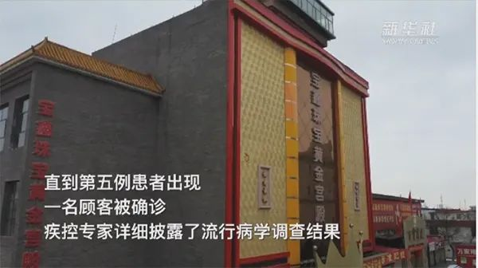

法国已是欧洲第二大疫区，欧盟仅剩一国新冠零病例
原文链接 备份链接 图片来源：视觉中国 记者：田思奇 “ 塞浦路斯成为欧盟“硕果仅存”的国家。法国已宣布全境禁止集体活动的人数上限从5000下调至1000，德国也实施了类似规定。 ” 两天内，法国确诊病例接近翻倍，成为欧洲疫情第二严重的国 …
澎湃新闻记者 林牧之
3月8日，还是零新增确诊病例！天津疾控人员又松了一口气
从2月28日到3月8日，天津已经连续10天零新增新冠肺炎确诊病例。截至3月8日，天津累计确诊136例，已经有129名患者治愈出院，还在医院治疗的确诊患者仅剩4人。
在这136例确诊病例中，几乎一半来自宝坻区。宝坻区累计确诊有60人，其中56人已治愈出院。
疫情危机似乎在逐步解除，而小区门口还没撕掉的防控通知，记录了宝坻区居民度过的惊心动魄一个月。
谈起新冠肺炎，人们仍心有余悸，一个月过去了，大家仍然记得那句掷地有声的话，“不让宝坻的百货大楼变成武汉的海鲜市场”。
这句话来自宝坻区人民政府区长毛劲松。2月9日，他说宝坻区的目标就是尽可能“静下来”。当时，武汉华南海鲜市场出现的新冠肺炎病例，引发了湖北的疫情爆发。距离武汉1千多公里外，一场潜伏的危机也在暗处偷袭天津。
天津的市民怎么也没想到，2020年春节前的喜庆采购，会引发这座城市一场空前的防疫战，牵涉到上万人隔离，6.6万人接受排查。而这一切还要从宝坻区那栋百货大楼说起。
拉响第一声警报
如果不是这一次疫情，宝坻区的百货商厦估计会从春节前一直热闹到元宵节。这座外墙红黄装潢的购物大楼，位于繁华的商业街，4000平方米营业面积，是宝坻人的购物打卡地。
早在春节前，大楼就拉好了各种年货促销的横幅。这里因为衣服样式多，价格便宜，周边村镇的居民也相约赶来。
1月初，大家对于“新型冠状病毒肺炎”的字眼还比较陌生。这个词首次大范围出现在全国视野，要倒推到1月20日，这一天国家卫健委高级别专家组明确表示，目前已证实新型冠状病毒肺炎有“人传人”现象。
四天后，1月24日，天津启动重大突发公共卫生事件一级响应。次日，也就是正月初一，宝坻百货大楼停业了。
当时宝坻百货大楼及其周边还算风平浪静。可是谁也没想到，不到七天的时间，一则消息掀起了波澜。
“我们这里有一例发烧病人，她没有武汉和湖北的接触史。但经过初步检查，症状很像新冠肺炎。”1月31日中午，宝坻区疾控中心传染病控制科科长郝肖阳接到了宝坻人民医院发热门诊的电话。
四个小时后，郝肖阳和同事拿到了这位病人的初诊结果——确诊新冠肺炎。检测标本随即被送往天津市疾控中心，等待最后的检测确定。
当了解到这位病人是宝坻区百货商场的一名销售人员时，郝肖阳心头一紧：从第一例病例感染，到百货大楼闭市，这其间有多少人擦肩而过？他们身在何处？
病毒的扩散正在看不见的“暗处”，进攻人体的防线。防疫与病毒赛跑，抢时间就是抢救生命！
宝坻区疾控人员通过掌握该患者在发病前14天的行动轨迹，以及发病后精确到每小时的出行时间轴，迅速展开排查。患者的家是第一个目的地。果不其然，患者的丈夫也确诊了，被送往海河医院救治。
而更紧急的是，如何寻找新冠肺炎患者的密切接触者，如何安置他们防止二次三次感染？不得不提的是，宝坻区位于天津、北京、唐山三座城市的几何中心，这里一旦爆发疫情，也将危及到京津冀的疫情防线。警报拉响！
宝坻区出现首例确诊病例后，官方次日对外发布一份紧急通告：1月20日至25日曾在宝坻百货大楼工作的售货员和购物的群众需自动居家隔离观察，不要外出走动。
隐匿的危险传播链
在接下来的几天，宝坻区人民医院接连确诊新冠肺炎患者。疫情流行初期，很多患者都是直接或间接跟武汉和湖北有关。而宝坻区的确诊患者近期几乎没有武汉旅行史或接触过武汉的发热人员。
这又是怎么传播开来的？谁是头号传播者？随着天津疾控中心专家对患者的资料掌握得越来越详细，真相慢慢浮出水面。

疾控专家对宝坻区百货大楼前5例确诊病例的先后发病情况进行层层分析，找到了蛛丝马迹：有一名患者早在1月21日就发病了，在发病前的1月12日-13日，她曾先后两次到天津附近的某市鞋类批发市场进货。
专家随后从全国的疫情报告里搜索发现，该市有新冠肺炎病例，也有本地传播的情况。他们判断，有可能这名患者是在该市进货的过程中被感染，之后回到天津发病的。
传染源找到了！2月2日，天津市疾控中心传染病预防控制室主任张颖在新闻发布会上解释，宝坻区百货大楼的疫情源头是一名销售员在外地感染，回到天津后发病，传染了另两名售货员和一名顾客，其中一名售货员又传染了家属，造成了聚集性传播。
接下来，让疾控专家担心的事情还是发生了，病例在不断增多。这些患者或是宝坻区百货大楼的销售员、或曾到过百货大楼购物的顾客，亦或是与患者密切接触的家属。
2月7日，宝坻区防控指挥部总指挥、区长毛劲松介绍，宝坻区已发病23名人员主要集聚在百货大楼这一个点，已对商场194名销售人员和9200名顾客采取相应的隔离措施。
不久后，天津宝坻区林亭口镇又出现了11人被感染的“迷局”。这11人分布在林亭口一村、三村和五村一共3个村，而且都没有明显的百货大楼接触史。病毒又是从哪来的？
天津市疾控中心专家抽丝剥茧，最后揭开谜团——三顿饭一桌牌。
原来，这11人中有10人是一家人。一位患者在初二、初三、初六跟家人聚餐吃饭，又去表姨夫家串门打了几把牌，以为没什么事，没想到发生了交叉感染，正是这样的侥幸心理传染了全家人。
但这一大家子近期没有人去过宝坻百货大楼，让他们受到牵连的还另有其人。
一位女病患，有百货大楼购物史，但核酸检测是阴性，而她的丈夫检测是阳性。因此天津市疾控中心专家反证该女士就是病例，可能检测出现了“假阴性”的问题。
“林亭口大家族感染迷局”最终水落石出，这对病患夫妇就是10口人的大家族与宝坻百货大楼的传染桥梁。
由于出色的专业能力和准确的判断力，天津市疾控中心传染病预防控制室主任张颖被网友称为“天津福尔摩斯”。
全区“紧急寻人”
传染点“宝坻区百货大楼”确定，针对性的防控措施也在紧锣密鼓地铺开。
疫情发生后，宝坻区对百货大楼进行封控消毒，对周边实施戒严管控。百货大楼所在的城关东街，数百家店铺均关闭。此外，进出宝坻的人员需出示身份证，与百货大楼疫情相关的人员一律不得离开宝坻。
“还在睡觉，大喇叭忽然一下响起来了，吓我一跳。告诉我们疫情严重，不让出门了。”宝坻辛务屯村村民王健（化名）说。
2月1日一大早，宝坻区各街镇、村居和社区的大小喇叭轰然响起，不限次巡回播报，电视、广播、宣传车、融媒体滚动消息不断，它们都在“紧急寻人”—— 与百货大楼疫情相关者。
当时，在百货大楼超市工作的王丽（化名），正在家里玩手机，一条宝坻区出现确诊病例的消息，让她心里咯噔了一下。“我和被确诊人员不在一个区域内工作，但是，谁知道呢？离得也没那么远。”
很快，王丽接到了街道工作人员和区卫健委的电话。“电话里通知我，需要对我进行隔离观察，希望我配合。”2月3日，王丽拿了一些换洗衣服，家人开车送她到位于宝坻开发区的某医学观察所。
“感觉很魔幻，穿着全套防护服的工作人员对我进行消毒，让我想起电影《生化危机》里的场景。”王丽被带进了6层一间有将近30平方米的房间，房间有一股浓郁的酒精味道，桌子上放着口罩、体温计以及一张印着注意事项和医生联系方式的A4纸。
截至2月7日，宝坻区已有194名百货大楼销售人员集中隔离；主动报告的去过百货大楼的9200多名顾客，均采取居家隔离措施，多名发热人员被送往发热门诊检查治疗。
“这个数字是动态的，未来可能在不断增加当中。”2月7日，在天津新冠肺炎防控工作新闻发布会上，宝坻区长毛劲松表示，目前该区启动了工作组的形式实行针对性监督防控。
具体来说，宝坻区各个相关街镇成立了多个工作组，每个小组由公安、街镇、社区、卫生院4位工作人员组成，他们负责监督一个社区或者一条村子重点人员的居家隔离情况。
而针对出现确诊病例的村子和小区，工作人员采取全封闭管控，仅保留一个出口。“这种封闭的标准跟武汉市目前一样。”2月7日，毛劲松称，出现确诊病例的地方要求所有人员不许进、不许出，完全实行静态封闭。所有物资由政府统一调配供应，跟集中隔离的规范一样。
2月9日，宝坻防控再升级，以“三道防线”切断病毒传播途径。第一道是社区和村庄提高封闭标准。第二道防线是城区通往农村地区的主要路口都实施了双向交通管控。第三道防线是宝坻区通向外界24个主路口、高速公路、国省道和36条乡村道路，均采取了不同等级的管控措施。
“构筑好第二道、第三道防线，让全区‘静’下来，切断传播途径，起到筑牢北京护城河的作用。”宝坻区交通局副局长王学说道。
地毯式排查：24小时超6.6万人
14200人！截至2月11日凌晨，宝坻区百货大楼已经引发上万人居家隔离。
然而，坏消息还在传来，与“宝坻百货大楼”相关联的确诊病例仍在攀升。2月10日，天津市报告新冠肺炎新增确诊病例4例，其中宝坻区3例。
彼时，宝坻区成为了天津确诊病例最多、影响范围最广的聚集性疫情发生地，这已经事关天津疫情防控的大局。这些确诊病例中农村居住占15例，新增的几例大多都来自农村地区。
这让宝坻区疫情防控工作指挥部警觉：病毒传染的途径还没完全切断，任何一个“漏网之鱼”都可能成为病毒传播的隐患。
“确诊病例中，有一位患者在家‘忍’了九天，直到症状严重了才去发热门诊，一下子就确诊了。所以千万别大意，宅在家里的一万多人也有风险。”宝坻区区长毛劲松说。
2月11日下午，宝坻区召开新冠肺炎疫情防控会议，又宣布了一项重大决定：未来24小时要逐一对隔离的一万多人进行排查！
当天晚上18点，一场阻击新冠肺炎疫情的闪电战开始了——寻找隐形的“密切接触者”。
宝坻集中全区近3000名工作人员，成立917个工作组，每三人为一组，由区直机关负责人带队，每组配备一名医护人员、一名社区或村委会工作人员，上门面对面摸排百货大楼相关人员的身体状况，真正摸清底数。
“我们一定要拿回最真实的数字！”宝坻区区委书记殷向杰叮嘱，上门排查有风险，大家一定要注意防护，但街镇缺多少人尽快上报，区委组织部已经收到700多名党员干部报名，随时充实一线。
北方的2月，夜晚室外温度徘徊在零度左右，最低跌至零下3度。宝坻区的排查小组戴好口罩和护目镜，夜晚光线不好，护目镜里都是哈气，看什么都是雾蒙蒙的，稍有不注意，就会脚滑打了个趔趄。
“24小时”的时间线摆在前面，小区排查耗时耗力，在与疫情赛跑的过程中，既要快更要耐心。然而，工作人员遇到的难题还远不止这些。
“你别上我家来，你把病毒带到我家怎么办？我刚隔离期满，然后你就把我传染了怎么办？”家住在丽苑社区的李先生把工作人员拦在了门外。经过反复劝说，李先生最后才同意接受上门排查。
2月12日凌晨1点，宝坻海滨街道办事处依然是灯火通明，4名工作人员在电脑前不停翻阅核查，对排查清单进行梳理。
海滨街道办事处副主任褚月宗介绍，如果在排查过程中，发现发热、干咳等症状人员，立即报告指挥部，由医疗救治组派车，到定点发热门诊就诊。如果有不配合情况，报到突发事件处置组及时处置。
经过连夜开展走访，宝坻区近3000名工作人员用不到24小时的时间排查出涉百货大楼疫情相关人员及其密切接触者6.6万余人，新发现的发热人员被送往宝坻区人民医院鉴诊筛查。
这场几乎全区出动的“大筛查”，让病毒无处藏身，最大限度切断了潜在的传染路径，让疾控人员和居民心里悬着的石头落了下来。
防控疫情，宝坻区还有一招——从“万人大筛查”到“万人大回访”。2月底，宝坻区开展了“万人大回访”行动，再次聚焦前期筛查锁定的涉宝坻百货大楼人员及其密切接触者、因身体不适在药店购买退烧、止咳、消炎药物等四类人员，精准防控，把排除疑点的人员“解放”出来。
最终，多套“组合拳”之下，疫情传播停了。2月28日，天津实现零新增确诊，接下来的10天连续保持零新增。宝坻的百货大楼没有变成第二个“武汉海鲜市场”。
如今，宝坻区迎来了新的任务——复工复产。三月份，阳春时节天气和，万物芳盛，这里正在恢复如初。
（部分资料综合自津云新闻、央视新闻、新华网）
本期编辑 常琛
推荐阅读


原文链接 备份链接 图片来源：视觉中国 记者：田思奇 “ 塞浦路斯成为欧盟“硕果仅存”的国家。法国已宣布全境禁止集体活动的人数上限从5000下调至1000，德国也实施了类似规定。 ” 两天内，法国确诊病例接近翻倍，成为欧洲疫情第二严重的国 …
原文链接 备份链接 文 |《财经》特派记者 金焱 发自华盛顿 编辑 | 苏琦 2020年3月6日，我打算给自己放一天的假。 算起来自从武汉疫情暴发，我在1月21采写了第一篇文章《美确诊首例新型病毒病例，或成全球性公共卫生危机事件信号》 …
原文链接 备份链接 据世卫组织新冠肺炎情况报告，截至欧洲中部时间7日10时(北京时间7日17时)，中国境外新冠肺炎确诊病例数达到21110例，死亡413例。其中，从3月7日零时至8日零时，意大利新冠肺炎确诊病例新增1332例，累计确诊病例 …
原文链接 备份链接 2月29日，特朗普出席“保守派政治行动大会”。图片来源：CPAC/Twitter 记者 | 潘金花 “ “我一点都不担心。”美国总统特朗普告诉记者，自己不会因为新冠肺炎疫情而取消政治集会。要 ” “我一点都不担心。” …
原文链接 备份链接 叶青武汉日记：真希望3月底能清零 6511 来源：正和岛 作者：叶青 03-06正在打榜，当前第3 [ 智谷趋势 - - …